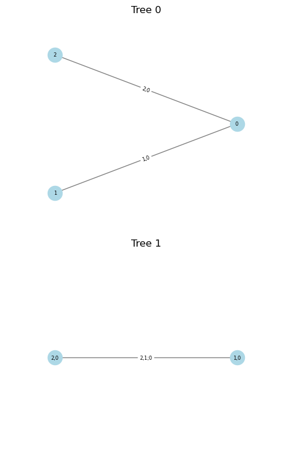

Introduction to the vine copula (Vinecop) API
Import the libraries
[1]:
import pyvinecopulib as pv
import numpy as np
A first vine copula
[2]:
# Specify pair-copulas
bicop = pv.Bicop(pv.bb1, 90, parameters=np.array([[3.0], [2.0]]))
pcs = [[bicop, bicop], [bicop]]
# Specify R-vine matrix
mat = np.array([[1, 1, 1], [2, 2, 0], [3, 0, 0]])
# Set-up a vine copula
cop = pv.Vinecop.from_structure(matrix=mat, pair_copulas=pcs)
print(cop)
cop.plot()
<pyvinecopulib.Vinecop> Vinecop model with 3 variables
tree edge conditioned variables conditioning variables var_types family rotation parameters df tau
1 1 3, 1 c, c BB1 90 3.00, 2.00 2.0 -0.80
1 2 2, 1 c, c BB1 90 3.00, 2.00 2.0 -0.80
2 1 3, 2 1 c, c BB1 90 3.00, 2.00 2.0 -0.80

Showcase some methods
[3]:
u = cop.simulate(n=10, seeds=[1, 2, 3])
fcts = [
cop.pdf,
cop.rosenblatt,
cop.inverse_rosenblatt,
cop.loglik,
cop.aic,
cop.bic,
]
[f(u) for f in fcts]
[3]:
[array([ 38.2942697 , 52.8473494 , 183.65461931, 36.9527167 ,
7.16001579, 14.15151805, 693.73724148, 10.40075319,
200.77188365, 117.39210389]),
array([[0.39834572, 0.55248667, 0.8346452 ],
[0.1638618 , 0.03952828, 0.8170847 ],
[0.14649436, 0.36602719, 0.16910484],
[0.90118677, 0.48023317, 0.11345478],
[0.61664802, 0.3370985 , 0.06016371],
[0.62193432, 0.19787956, 0.12286857],
[0.98701895, 0.76550606, 0.34747154],
[0.6902412 , 0.85523898, 0.78638305],
[0.20454371, 0.24959629, 0.55338439],
[0.13685699, 0.17627362, 0.10872534]]),
array([[0.39834572, 0.61612757, 0.57211478],
[0.1638618 , 0.8532701 , 0.82541445],
[0.14649436, 0.88204652, 0.82745691],
[0.90118677, 0.04913159, 0.21760103],
[0.61664802, 0.32505571, 0.42182647],
[0.62193432, 0.29848552, 0.44384955],
[0.98701895, 0.00394023, 0.08398199],
[0.6902412 , 0.29659508, 0.30017289],
[0.20454371, 0.8214247 , 0.77090086],
[0.13685699, 0.88790358, 0.84304038]]),
40.00539851060964,
-68.01079702121928,
-66.195286463255]
Different ways to fit a copula (when the families and structure are known)…
[4]:
u = cop.simulate(n=1000, seeds=[1, 2, 3])
# Define first an object to control the fits:
# - pv.FitControlsVinecop objects store the controls
# - here, we only restrict the parametric family
# - see help(pv.FitControlsVinecop) for more details
controls = pv.FitControlsVinecop(family_set=[pv.bb1])
print(controls)
# Create a new object an select family and parameters by fitting to data
cop2 = pv.Vinecop.from_structure(matrix=mat, pair_copulas=pcs)
cop2.select(data=u, controls=controls)
print(cop2)
# Otherwise, create directly from data
cop2 = pv.Vinecop.from_data(data=u, matrix=mat, controls=controls)
print(cop2)
<pyvinecopulib.FitControlsVinecop>
Family set: BB1
Parametric method: mle
Nonparametric method: constant
Nonparametric multiplier: 1
Weights: no
Selection criterion: bic
Preselect families: yes
mBIC prior probability: 0.9
Truncation level: none (default)
Tree criterion: tau
Threshold: 0
Select truncation level: no
Select threshold: no
Select families: yes
Show trace: no
Number of threads: 1
MST algorithm: mst_prim
<pyvinecopulib.Vinecop> Vinecop model with 3 variables
tree edge conditioned variables conditioning variables var_types family rotation parameters df tau
1 1 3, 1 c, c BB1 90 2.84, 2.02 2.0 -0.80
1 2 2, 1 c, c BB1 90 2.81, 2.01 2.0 -0.79
2 1 3, 2 1 c, c BB1 90 3.07, 2.05 2.0 -0.81
<pyvinecopulib.Vinecop> Vinecop model with 3 variables
tree edge conditioned variables conditioning variables var_types family rotation parameters df tau
1 1 3, 1 c, c BB1 90 2.84, 2.02 2.0 -0.80
1 2 2, 1 c, c BB1 90 2.81, 2.01 2.0 -0.79
2 1 3, 2 1 c, c BB1 90 3.07, 2.05 2.0 -0.81
When nothing is known, there are also two ways to fit a copula…
[5]:
# Create a new object and select strucutre, family, and parameters
cop3 = pv.Vinecop(d=3)
cop3.select(data=u)
print(cop3)
# Otherwise, create directly from data
cop3 = pv.Vinecop.from_data(data=u)
print(cop3)
cop3.plot()
<pyvinecopulib.Vinecop> Vinecop model with 3 variables
tree edge conditioned variables conditioning variables var_types family rotation parameters df tau
1 1 2, 1 c, c BB1 90 2.81, 2.01 2.0 -0.79
1 2 1, 3 c, c BB6 90 1.49, 3.96 2.0 -0.80
2 1 2, 3 1 c, c BB1 270 2.94, 2.02 2.0 -0.80
<pyvinecopulib.Vinecop> Vinecop model with 3 variables
tree edge conditioned variables conditioning variables var_types family rotation parameters df tau
1 1 2, 1 c, c BB1 90 2.81, 2.01 2.0 -0.79
1 2 1, 3 c, c BB6 90 1.49, 3.96 2.0 -0.80
2 1 2, 3 1 c, c BB1 270 2.94, 2.02 2.0 -0.80
C-vine structures
[6]:
# create a C-vine structure with root node 1 in first tree, 2 in second, ...
cvine = pv.CVineStructure([4, 3, 2, 1])
# specify pair-copulas in every tree
tree1 = [
pv.Bicop(pv.gaussian, 0, np.array([[0.5]])),
pv.Bicop(pv.clayton, 0, np.array([[3.0]])),
pv.Bicop(pv.student, 0, np.array([[0.4], [4]])),
]
tree2 = [
pv.Bicop(pv.indep),
pv.Bicop(pv.gaussian, 0, np.array([[0.5]])),
]
tree3 = [pv.Bicop(pv.gaussian)]
# instantiate C-vine copula model
cop = pv.Vinecop.from_structure(
structure=cvine, pair_copulas=[tree1, tree2, tree3]
)
print(cop)
cop.plot()
<pyvinecopulib.Vinecop> Vinecop model with 4 variables
tree edge conditioned variables conditioning variables var_types family rotation parameters df tau
1 1 4, 1 c, c Gaussian 0 0.50 1.0 0.33
1 2 3, 1 c, c Clayton 0 3.00 1.0 0.60
1 3 2, 1 c, c Student 0 0.40, 4.00 2.0 0.26
2 1 4, 2 1 c, c Independence 0.00
2 2 3, 2 1 c, c Gaussian 0 0.50 1.0 0.33
3 1 4, 3 2, 1 c, c Gaussian 0 0.00 1.0 0.00